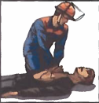
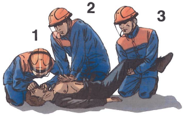

Билет №6
Вопрос 1. Какие опасные производственные факторы могут оказывать воздействие в процессе работы на слесаря КИПиА. (ИОТП-13-13, п.1.11.)
Ответ:
На слесаря КИПиА в процессе выполнения работ может оказывать действие следующие вредные и опасные производственные факторы:
подвижные, вращающиеся элементы производственного оборудования (приводные и передаточные механизмы, режущие инструменты, вращающиеся и перемещающиеся приспособления и др.);
опасное значение напряжения в электрической цепи;
работы на высоте;
свинец и его неорганические соединения (по свинцу);
метан;
углеводороды алифатические предельные С2-С10(в пересчете на С);
бутан-1-ол (бутиловый спирт);
пропан-2-он (ацетон);
метилбензол (толуол);
шум (эквивалентный уровень звука);
пониженная температура воздуха в производственных помещениях и на открытой территории.
Вопрос 2. Нормы предельно допустимых нагрузок при подъеме и перемещении тяжестей вручную. (ИОТВ-124-15, п.1.12.)
Ответ:
Нормы предельно допустимых нагрузок при подъеме и перемещении тяжестей вручную:
для мужчин:
| Факторы трудового процесса |
Оптимальные |
Допустимые |
| Мужчины |
| 1. Подъем и перемещение (разовое) тяжести при чередовании с другой работой (до 2 раз в час), кг |
До 15 |
До 50
|
| 2. Подъем и перемещение (разовое) тяжести постоянно в течение рабочей смены, кг |
До 5 |
До 15 |
3. Суммарная масса грузов, перемещаемых в течение каждого часа смены, кг:
- с рабочей поверхности
- с пола |
-
До 250
До 100 |
-
До 870
До 435 |
| 4. Рабочая поза |
Свободная, удобная, возможность смены рабочего положения тела (сидя, стоя) |
Периодическое, до 25% времени нахождение в неудобной(работа с поворотом туловища, (невозможность изменения взаимного положения тела относительно друг друга) поднятыми руками, неудобным размещением конечностей и/или фиксированной позе |
для женщин:
| № п/п |
Характер работы |
Предельно допустимая масс груза |
| 1. |
Подъем и перемещение тяжестей при чередовании с другой работой (до 2 раз в час) |
15 кг |
| 2. |
Подъем и перемещение тяжестей постоянно в течение рабочей смены |
7 кг |
| 3. |
Величина динамической работы, совершаемой в течение каждого часа рабочей смены, не должна превышать:
С рабочей поверхности
С пола |
1750 кгм
875 кгм |
Вопрос 3. Определение «взрывоопасная зона». (ИОТВ-102-14, п.1.5.)
Ответ:
Взрывоопасная зона - помещение или ограниченное пространство в помещении или наружной установке, в котором имеются или могут образоваться взрывоопасные смеси.
Вопрос 4. Назовите порядок оказания первой помощи при сильном кровотечении из ран плеча, предплечья, ладони. (Инструкция для проведения обучения оказания первой помощи пострадавшим на производстве, п.9.1.)
Ответ:
9.1. Правила оказания помощи в случаях сильного кровотечения из ран плеча, предплечья и ладони:
Правило первое.
Усадить пострадавшего и пережать рукой плечевую артерию выше раны.
Правило второе.
Наложить жгут на поднятую вверх руку до исчезновения пульса на лучевой артерии.
Правило третье.
Убедиться в отсутствии пульса на лучевой артерии.
Правило четвертое.
Наложить на рану стерильную повязку.
Правило пятое.
Вложить записку о времени наложения жгута и еще раз проконтролировать пульс.
Правило шестое.
Зафиксировать руку косынкой.
Если прибытие медицинского персонала ожидается в течение нескольких часов? Через каждые 30 минут следует снимать жгут на 20-30 секунд. Таким образом можно поступать в течение нескольких часов. Время, указанное в записке, не изменять.
Вопрос 5.Испытание стеллажей. Методы, периодичность, оформление. (ПИ-232-10, п.6.9)
Ответ:
6.9. С целью проверки технического состояния и соответствия требованиям безопасности стеллажи на месте эксплуатации должны подвергаться осмотру и испытанию статической нагрузкой не реже 1 раза в 12 месяцев.
6.9.1. Методы испытаний:
Качество материалов и поверхностей защитных покрытий деталей стеллажей проверяют внешним осмотром.
Качество сварных соединений проверяют внешним осмотром и измерением, выявляют поверхностные дефекты (см. п. 4.10 ПИ-232-10).
При испытании на прочность и устойчивость вертикальной и горизонтальной нагрузками стеллаж, имеющий все элементы, предусмотренные рабочими чертежами, подвергают воздействию статических нагрузок. Опоры стеллажей должны иметь жесткое соединение с основанием, закрепленным на полу.
При испытании вертикальной нагрузкой к каждой ячейке прикладывается нагрузка Р = 1,25Q. (Q - допустимая нагрузка на ячейку по паспорту). Продолжительность действия нагрузки -10 мин.
После снятия вертикальной нагрузки производится испытание горизонтальной статической нагрузкой Р = Q/2 , которая прикладывается к верхней ячейке в точке В/2 (где В - ширина ячейки стеллажа) одной из крайних секций стеллажа в течение 10 мин.
Затем измеряют неперпендикулярность стоек стеллажа к горизонтальной плоскости и нагрузку Р снимают.
После этого в течение 10 мин. прикладывают нагрузку Р в точке L/2 этой же секции и ячейке стеллажа (L - длина ячейки стеллажа), измеряют неперпендикулярность стоек секций стеллажа к горизонтальной плоскости и нагрузку Р снимают.
После испытаний действием вертикальной и горизонтальной нагрузок стеллаж должен удовлетворять требованиям п.4.13; 4.14 ПИ-232-10, швы сварных соединений - требованиям п.4.10 ПИ-232-10. детали стеллажей не должны иметь повреждений и остаточных деформаций.
Результаты периодических испытаний оформляют протоколом (актом) и вносят в паспорт стеллажа.
Вопрос 6. В каких случаях пострадавшему проводятся реанимационные мероприятия и как они выполняются (с отработкой практических навыков на тренажере). (Инструкция для проведения обучения оказания первой помощи пострадавшим на производстве, п. 4.2.-5.9.)
Ответ:
4.2 Последовательность действий при оказании первой медицинской помощи:
Такая очередность действий позволит сохранить жизнь пострадавшего до прибытия медицинских работников |
1. |
Нет сознания и нет пульса на сонной артерии (клиническая смерть) |
 |
Приступить к реанимации (см. п.5) |
2. |
Нет сознания, но есть пульс на сонной артерии (обморок или начало развития комы) |
 |
Попытаться привести пострадавшего в сознание (см. п.6)
Если в течени 3-4 минут это не удалось, обязательно повернуть его на живот (см. п.7) |
3. |
Обильное кровотечение |

|
Быстро пережать конечность выше раны и наложить жгут (см. п.9) |
4. |
Наличие раны |

|
Наложить стерильные повязки (см. п.10.3) |
5. |
Признаки перелома конечностей |

|
Наложить транспортную шину (см. п.11) |
5. Правила определения признаков клинической смерти:
Правило первое.
Чтобы сделать вывод о наступлении клинической смерти у неподвижно лежащего пострадавшего, достаточно убедиться в отсутствии сознания и пульса на сонной артерии.
Правило второе.
Не следует терять время на определение сознания путем ожидания ответов на вопросы: «Все ли у тебя в порядке? Можно ли приступить к оказанию помощи?». Надавливание на шею в области сонной артерии является сильным болевым раздражителем.
Правило третье.
Не следует терять время на определение признаков дыхания. Они трудноуловимы, и на их определение с помощью ворсинок ватки, зеркальца или наблюдения за движением грудной клетки можно потерять неоправданно много времени. Самостоятельное дыхание без пульса на сонной артерии продолжается не более минуты, а вдох искусственного дыхания взрослому человеку ни при каких обстоятельствах не может причинить вреда.
Если подтвердились признаки клинической смерти? Быстро освободить грудную клетку от одежды приступить к сердечно-легочной реанимации см. пп.5.5; 5.6.

5.1. Правила определения пульса на сонной артерии:
Правило первое.
Расположить четыре пальца на шее пострадавшего (см. п.5.4) и убедиться в отсутствии пульса на сонной артерии.
Правило второе.
Определять пульс следует не менее 10 секунд.
5.2. Правила освобождения грудной клетки от одежды для проведения реанимации:
Правило первое.
Расстегнуть пуговицы рубашки и освободить грудную клетку.
Правило второе.
Джемпер, свитер или водолазку приподнять и сдвинуть к шее.
Правило третье.
Майку, футболку или любое нательное белье из тонкой ткани можно не снимать. Но прежде чем наносить удар по грудине или приступать к непрямому массажу сердца, следует убедиться, что под тканью нет нательного крестика или кулона.
Правило четвертое.
Поясной ремень обязательно расстегнуть или ослабить. Известны случаи, когда во время проведения непрямого массажа сердца печень повреждалась о край жесткого ремня.

Внимание! Перед тем как приступить к реанимации, необходимо уложить пострадавшего на жесткую и ровную поверхность, освободить грудную клетку от одежды и определить анатомические ориентиры (см. п. 5.4).
5.3. Правила освобождения грудной клетки от одежды для проведения реанимации, в случаях, когда на женщине надет бюстгальтер - его надо сдвинуть ближе к шее.
5.4. Анатомические ориентиры, необходимые для проведения сердечно-легочной реанимации:

5.5. Правила проведения непрямого массажа сердца и безвентиляционной реанимации:
Правило первое.
Расположить основание правой ладони выше мечевидного отростка так, чтобы большой палец был направлен на подбородок или живот пострадавшего. Левую ладонь расположить на ладони правой руки.
Правило второе.
Переместить центр тяжести на грудину пострадавшего и проводить непрямой массаж сердца прямыми руками.
Правило третье.
Продавливать грудную клетку не менее чем на 3-5 см с частотой не реже 60 раз в минуту.
Правило четвертое.
Каждое следующее надавливание начинать только после того, как грудная клетка вернется в исходное положение.
Правило пятое.
Оптимальное соотношение надавливаний на грудную клетку и вдохов искусственной вентиляции легких - 30:2, независимо от количества участников реанимации.
Правило шестое.
По возможности приложить холод к голове.
 Внимание! При каждом надавливании на грудную клетку происходит активный выдох, а при ее возвращении в исходное положение — пассивный вдох. Когда выделения
изо рта пострадавшего представляют угрозу для здоровья спасающего, можно ограничиться проведением непрямого массажа сердца, т.е. безвентиляционным вариантом реанимации.
Внимание! При каждом надавливании на грудную клетку происходит активный выдох, а при ее возвращении в исходное положение — пассивный вдох. Когда выделения
изо рта пострадавшего представляют угрозу для здоровья спасающего, можно ограничиться проведением непрямого массажа сердца, т.е. безвентиляционным вариантом реанимации.
Внимание! Чтобы непрямой массаж сердца был эффективным, его необходимо проводить на ровной жесткой поверхности.
Если под ладонью появился неприятный хруст (признак перелома ребер)? Уменьшить не глубину и силу, а ритм надавливаний и ни в коем случае не прекращать непрямой массаж сердца.
5.6. Правила проведения вдоха искусственной вентиляции легких (далее - ИВЛ) способом «изо рта в рот»:
Правило первое.
Правой рукой обхватить подбородок так, чтобы пальцы, расположенные на нижней челюсти и щеках пострадавшего, смогли разжать и раздвинуть его губы.
Правило второе.
Левой рукой зажать нос.
Правило третье.
Запрокинуть голову пострадавшего и удерживать ее в таком положении до окончания проведения вдоха.
Правило четвертое.
Плотно прижаться губами к губам пострадавшего и сделать в него максимальный выдох. Если во время проведения вдоха ИВЛ пальцы правой руки почувствуют раздувание щек, можно сделать безошибочный вывод о неэффективности попытки вдоха.
Правило пятое.
Если первая попытка вдоха ИВЛ оказалась неудачной, следует увеличить угол запрокидывания головы и сделать повторную попытку.
Правило шестое.
Если вторая попытка вдоха ИВЛ оказалась неудачной, то необходимо сделать 30 надавливаний на грудину, повернуть пострадавшего на живот, очистить пальцами ротовую полость и только затем сделать вдох ИВЛ.

Внимание! Нет необходимости разжимать челюсти пострадавшего, так как зубы не препятствуют прохождению воздуха. Достаточно разжать только губы.
Если невозможно преодолеть чувство брезгливости или выделения изо рта пострадавшего представляют угрозу для здоровья спасателя? Следует использовать специальную пластиковую маску для проведения ИВЛ способом «изо рта в рот».
5.6.1. Правила использования защитной маски для безопасного проведения ИВЛ:
Внимание! Когда контакт с выделениями из ротовой полости пострадавшего представляет угрозу инфицирования, отравления ядовитыми газами, искусственное дыхание можно проводить только через специальную защитную маску.
Правило первое.
Правильно взять маску в правую руку. Захватить ее пальцами правой руки так, чтобы большая часть ладони осталась свободной.
Правило второе.
Свободной частью ладони обхватить подбородок. Придерживая пальцами маску на лице, запрокинуть голову пострадавшего.
Правило третье.
Левой рукой прижать маску к лицу.
Правило четвертое.
Прижаться губами к отверстию с защитным клапаном и сделать в него выдох.
 Когда проведение ИВЛ «изо рта в рот» представляет угрозу для здоровья спасателя, а защитной маски нет? Проводить непрямой массаж сердца - безвентиляционную реанимацию (см. п.5.5) - до прибытия медицинского персонала или появления защитной маски.
Когда проведение ИВЛ «изо рта в рот» представляет угрозу для здоровья спасателя, а защитной маски нет? Проводить непрямой массаж сердца - безвентиляционную реанимацию (см. п.5.5) - до прибытия медицинского персонала или появления защитной маски.
5.7. Правила проведения реанимации более 10-15 минут:
Внимание! Мужчина со средними физическими данными может проводить комплекс сердечно-легочной реанимации не более 3-4 минут. Вдвоем с помощником - не более 10 минут. Втроем — с лицами любого пола, возраста и физических данных - более часа.
Правило первое.
Первый участник делает вдох искусственного дыхания. Контролирует реакцию зрачков и пульс на сонной артерии и информирует партнеров о состоянии пострадавшего: «Есть реакция зрачков!» или «Есть пульс!» и т.п.
Правило второе.
Второй участник проводит непрямой массаж сердца и отдает команду: «Вдох!». Контролирует эффективность вдоха искусственного дыхания по подъему грудной клетки и констатирует: «Вдох прошел!» или «Нет вдоха!».
Правило третье.
Третий участник приподнимает ноги пострадавшего для улучшения притока крови к сердцу. Восстанавливает силы и готовится сменить второго участника. Координирует действия.
Правило четвертое.
Через каждые 2-3 минуты реанимации обязательно производится смена участников и проверяется наличие самостоятельного пульса.
Правило пятое.
По возможности приложить холод к голове пострадавшего.
5.8. Правила расположения участников реанимации:
Внимание! Такое расположение участников позволяет:
избегать столкновений головами;
рационально использовать силы (физически слабого участника следует чаще располагать в ногах пострадавшего, но при этом он должен координировать действия всей команды);
привлечь к реанимации любого необученного человека.

Сначала новичку следует доверить поддерживание ног, а затем задействовать в проведении реанимации.
5.9. Правила проведения реанимации в ограниченном пространстве:
Правило первое.
Комплекс реанимации можно проводить только в положении пострадавшего лежа на спине, на ровной жесткой поверхности.
Правило второе.
Обеспечить возможность запрокидывания головы пострадавшего для проведения ИВЛ.
Вопрос 7. Техническое обслуживание теплообменников "труба в трубе" ТТРМ УППНиПБ. Периодичность, типовые операции, регламентирующие документы, оформление документации. (Положение о техническом обслуживании и текущем ремонте средств автоматизации и телемеханизации, контрольно-измерительных приборов, СТО 36-2007, ПИ-456-15).
Ответ:
Вопрос 8. Проверка средств сигнализации, противоаварийных защит и блокировок установки для получения битума. Периодичность, типовые операции, регламентирующие документы, оформление документации. (Положение о техническом обслуживании и текущем ремонте средств автоматизации телемеханизации, контрольно-измерительных приборов, СТО-36-2007, ПИ-284-15).
Ответ: